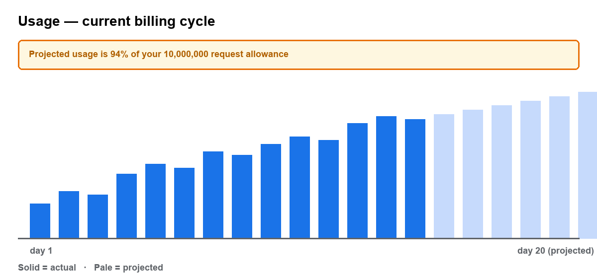

Seat charges are the most common source of billing questions. This article explains how seats are counted, when they are charged, and how to read the usage dashboard.
How seats are counted
A seat is any user with an active login. Seats are counted at the moment the invoice is generated, not continuously through the month. Deactivating a user before the invoice date therefore avoids the charge entirely.
| Plan | Seats included | Extra seat / month | Maximum seats |
|---|---|---|---|
| Developer | 1 | Not available | 1 |
| Starter | 5 | $19 | 25 |
| Growth | 25 | $15 | 250 |
| Enterprise | Unlimited | Included | Unlimited |
Roles and what they can see
Billing visibility is role-gated. A developer who cannot find the invoices page is almost
always missing the billing_admin role rather than hitting a bug.
| Role | View invoices | Change payment method | Add seats | Cancel plan |
|---|---|---|---|---|
| owner | Yes | Yes | Yes | Yes |
| billing_admin | Yes | Yes | Yes | No |
| developer | No | No | No | No |
| viewer | No | No | No | No |
Reading the usage dashboard
The usage chart shows requests per day against your monthly allowance. The shaded band is projected usage for the remainder of the cycle, based on the trailing seven-day average.

The amber banner appears once projected usage exceeds 90% of the allowance. It is a projection, not a charge, and disappears if traffic falls back.
Common questions
- Does removing a seat refund me?
- No. Removing a seat mid-cycle produces a prorated credit applied to the next invoice. It is not returned to the payment method.
- Are deactivated users still charged?
- No, provided they were deactivated before the invoice generation date.
- Can I exceed the maximum seat count?
- Not self-serve. Growth accounts needing more than 250 seats must move to Enterprise.